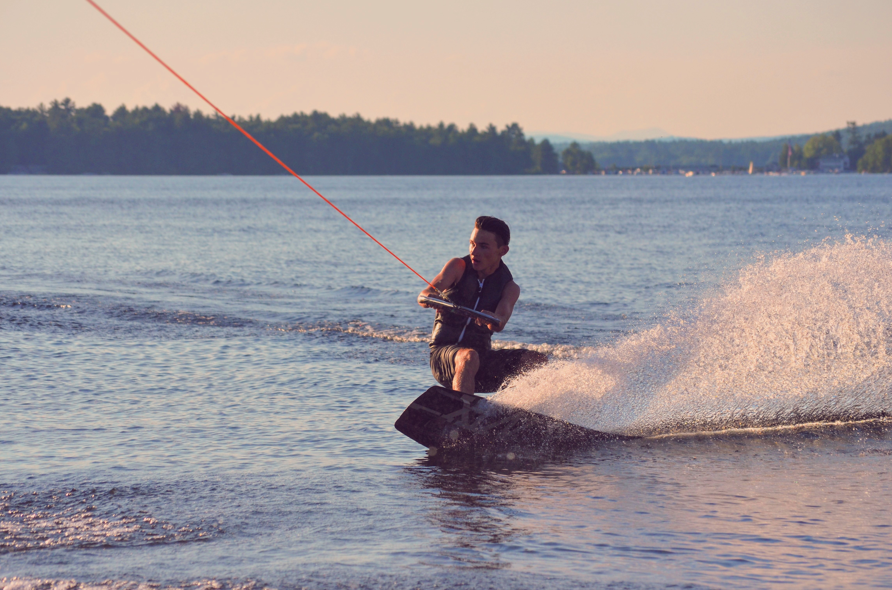

I've worked for a few places in the last two years, below is a list of them from first jobs to the current ones (businesses aren't included)-
- Hannaford super market - I worked here for 1 1/2 years and it wasn't one of my favorite jobs. I was a bagger / cashier but I feel like the job wasn't really for me. I like to be outdoors more and this job I was inside all day long.
- East Coast Property Care - This is one of my parents businesses that I work for 2 years. I cleaned the corporate offices at Hannaford in Scarborough Maine. Even though I was inside on this job too, it was a night job so I didn't mind it at all. Only reason why I left is for my current job which made it so I didn't have time anymore.
- Captain Dingley's - This is byfar the best job I've ever had and my most favorite. I drive a boat on Long Lake, in Naples Maine, and teach people from any age level how to wakeboard, wakesurf, or waterski. I'm really into these sports and do them everyday during the summer so it's really fun to teach people how to do it and help push the sport with more people doing it everyday. I work a lot for this job, usually 5-6 days a week with 10-12 hours a day, but for me I enjoy it so much that it flies by. Im excited to go back this summer and teach more people!
Below is a list of my hobbies and sports that I regularly partake in -
- Snowboarding - Snowboarding is probably my favorite sport to do, I've been riding for about 7 years now. As soon as winter hits Maine I start going to the mountains Friday-Sunday on the weekends until the snow melts. My home Mountain is called Sunday River and it's still one of the best ones I've ever been to. This winter during our break I think I'm going to Colorado to go and ride there.
- Wakeboarding - I've been wakeboarding now for about 5 years and learned a lot of cool trick recently like backflips and corks. I enjoy it because it's just like snowboard just on water, so even though its no longer winter I can still get the feel of snowboarding while getting cooled off in the water.
- Wakesurfing - Wakesurfing is a really cool new water sport that is taking everything by storm. It's a really hard concept to wrap your brain around because you actually let go of the rope right behind the boat and your able to ride the boats wave forever without a rope. so you get the surfing aspect of it but instead your 5-10 feet behind a wakeboard boat. you can also do a bunch of tricks like 360's, shove-its, ollies and a lot more.
- Kendama - Kendama is an old Japanese skill toy that is making it's way back into the American culture and is becoming big again. The toy is all made up of wood with 1 string attaching the ken with the tama making it a kendama. It's really hard to learn to be able to do some hard tricks but nothing is more satisfying than learning a new trick that has taken you hours.